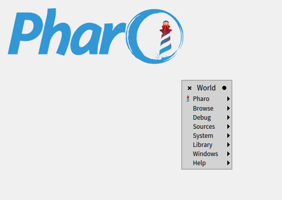
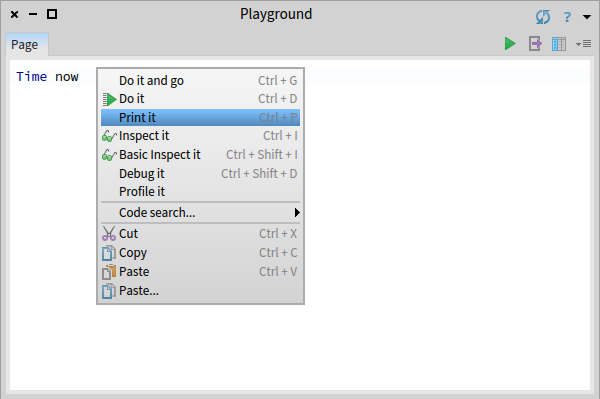
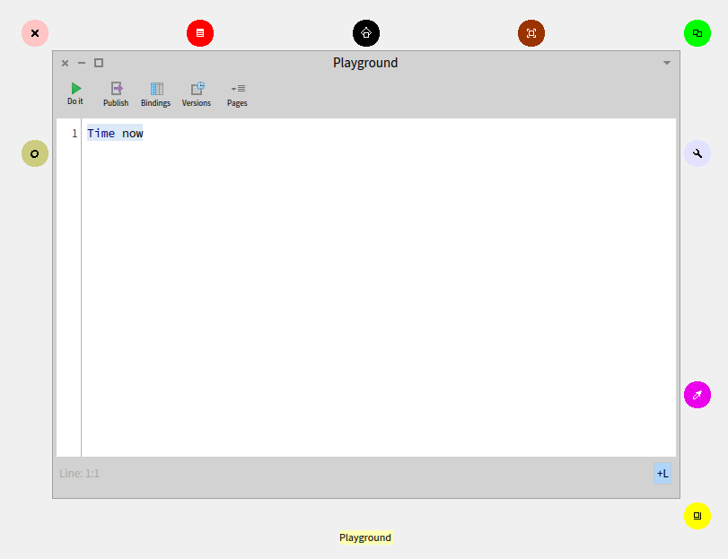
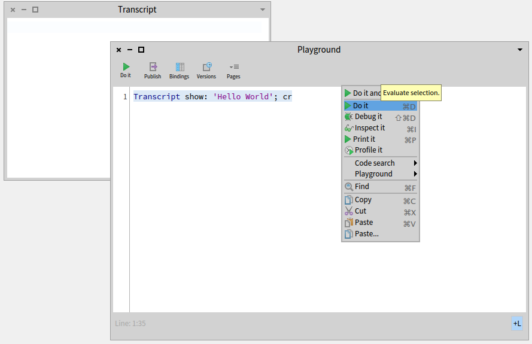
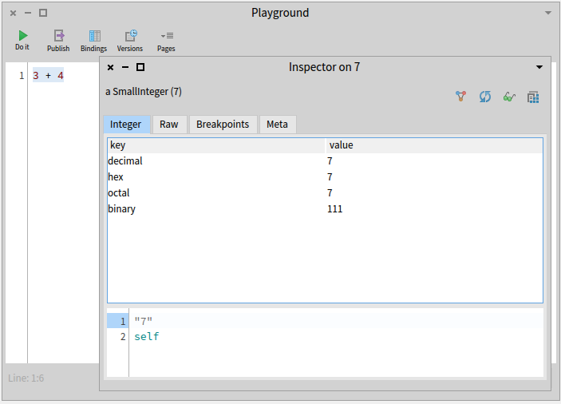
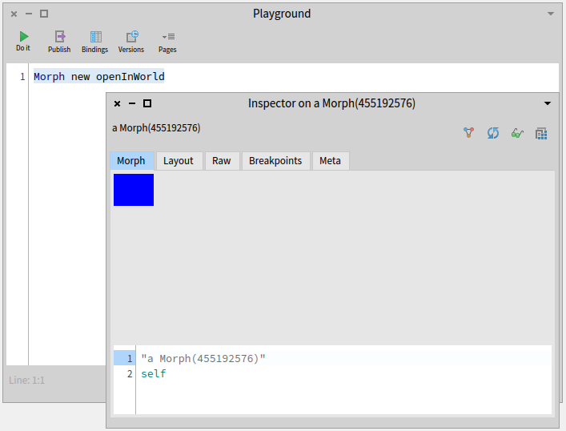
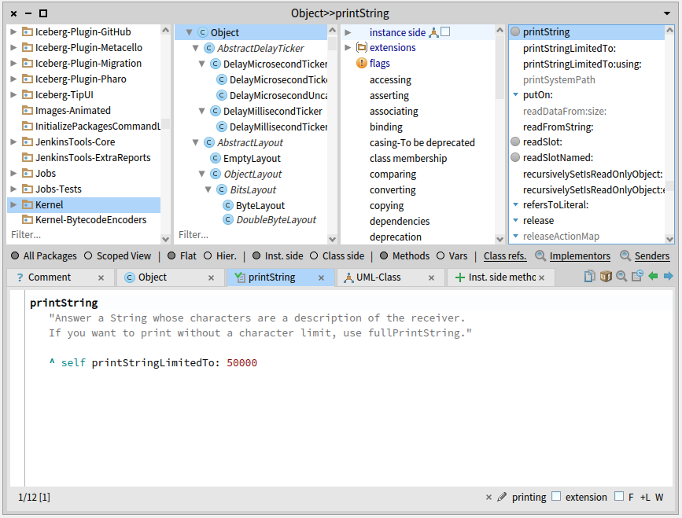

3 A quick tour of Pharo
This chapter will take you on a high-level tour of Pharo, to help you get comfortable with the environment. There will be plenty of opportunities to try things out, so it would be a good idea to have a computer handy when you read this chapter.
In particular, you will learn about the different ways of interacting with the system, and discover some of the basic tools. You will also learn how to define a new method, create an object, and send it messages.
Try to remember that this is a quick tour of Pharo, a taster of the environment. Don't become stuck when you don't understand something, it will almost certainly be covered in more detail in the next few chapters. You do not have to know everything, or at least, you don't have to know everything right away anyway. Make a note of what confuses or intrigues you and keep just keep going; it will all become clearer the further you read on.
Note: Most of the introductory material in this book will work with any Pharo version, so if you already have one installed, you may as well continue to use it. However, since this book is written for Pharo 90, if you notice differences between the appearance or behavior of your system and what is described here, do not be surprised.
3.1 The World Menu
Once Pharo is running, you should see a single large window, possibly containing some open playground windows (see Figure 3.1). You might notice a menu bar, but Pharo also makes use of context-dependent pop-up menus.

Clicking anywhere on the background of the Pharo window will display the World Menu, which contains many of the Pharo tools, utilities, and settings.
Take a minute to explore the World Menu. You will see a list containing many of Pharo's core tools, including the System Browser, the Playground, the package manager Iceberg, and many others. We will discuss them all in more detail in the coming chapters.
3.2 Interacting with Pharo
Pharo offers three ways to interact with the system using a mouse or other pointing device.
click (or left-click): this is the most commonly used mouse button, and is normally equivalent to left-clicking (or clicking a single mouse button without any modifier key). For example, click on the background of the Pharo window to bring up the World Menu (Figure 3.1).
action-click (or right-click): this is the next most used button. It is used to bring up a contextual menu that offers different sets of actions depending on where the mouse is pointing (see Figure 3.2). If you do not have a multi-button mouse, then normally you would configure action-click to be performed when clicking the mouse button and holding down the control modifier.
meta-click: Finally, you may meta-click on any object displayed in the image to activate the "Morphic halo", an array of handles that are used to perform operations on the on-screen objects themselves, such as inspecting or resizing them (see Figure 3.3). If you let the mouse linger over a handle, a help balloon will explain its function. In Pharo, how you meta-click depends on your operating system: either you must hold Ctrl-Shift or Alt-Shift (on Windows or Linux) or Option-Shift-Cmd (on macOS) while clicking.


About vocabulary
If you talk to Pharoers for a while, you will notice that they generally do not use phrases like call an operation or invoke a method, which you might hear in other programming languages. Instead, they will say send a message. This reflects the idea that objects are responsible for their own actions and that the method associated with the message is looked up dynamically. When sending a message to an object, it is the object, and not the sender, that selects the appropriate method for responding to your message. In most (but not all) cases, the method with the same name as the message is executed.
As a user, you do not need to understand how each message works, the only thing you need to know is what the available messages are for the objects that interest you. This way, an object can hide its complexity, and coding can be kept as simple as possible without losing flexibility.
How to find the available messages for each object is something we will explore later on.
3.3 Playgrounds and Transcripts
Let's do some simple exercises to get comfortable in our new environment:
- Close all open windows within Pharo.
- Look in the menu and open a Transcript and a Playground.
- Position and resize the transcript and playground windows so that the Playground just overlaps the Transcript (see Figure 3.4).
You can resize windows by dragging one of the corners. At any given time only one window is active; it is the one in front and has its border highlighted.
About Playground
A Playground is useful for typing and running snippets of code that you would like to experiment with. You can also use Playgrounds for typing any text that you would like to remember, such as to-do lists or instructions for anyone who will use your image.
Type the following text into the Playground:
Transcript show: 'hello world'; cr.Try double-clicking at various points on the text you have just typed. Notice how an entire word, an entire line, or all of the text is selected, depending on whether you click within a word, at the end of a line, or at the end of the entire expression. In particular, if you place the cursor before the first character or after the last character and double-click, you select the entire paragraph.
Select the text you have typed, right click and select Do it. Notice how the text hello world appears in the Transcript window (See Figure 3.4). Do it again!

3.4 Keyboard shortcuts
If you want to evaluate an expression, you do not always have to right click. Instead, you can use the keyboard shortcuts that are shown next to each menu item. Even though Pharo may seem like a mouse driven environment, it contains over 200 shortcuts for all of its different tools, as well as the facility to assign a keyboard shortcut to any of the 143 000 methods contained in the Pharo image.
Depending on your platform, you may have to press one of the modifier keys, which are Control, Alt, and Command. We will use Cmd in the rest of the book, so each time you see something like Cmd-D, just replace it with the appropriate modifier key depending on your operating system. The corresponding modifier key in Windows is Ctrl, and in Linux it is either Alt or Ctrl.
In addition to Do it, you might have noticed Do it and go, Print it, Inspect it and several other options in the context menu. Let's have a quick look at each of these.
3.5 Doing vs. printing
Type the expression 3 + 4 into the playground. Now Do it with the keyboard shortcut Cmd-D.
Don't be surprised if nothing happened! What you just did is send the message + with argument 4 to the number 3. Normally, the resulting 7 would have been computed and returned to you, but since the playground did not know what to do with this answer, it simply did not show the answer. If you want to see the result, you should Print it instead. Print it actually compiles the expression, executes it, sends the message printString to the result, and displays the resulting string.
Select 3 + 4 and Print it (Cmd-P). This time we see the result we expect.
3 + 4
>>> 7We use the notation >>> as a convention in this book to indicate that a particular Pharo expression yields a given result when you Print it.
Inspect.
3.6 Inspect
Select or place the cursor on the line of 3 + 4, and this time Inspect it (Cmd-I).
Now you should see a new window titled "Inspector on 7" as shown in Figure 3.5. The inspector is an extremely useful tool that allows you to browse and interact with any object in the system. The subtitle of the window, "a SmallInteger (7)", tells us that 7 is an instance of the class SmallInteger. The top panel allows us to browse the instance variables of an object and their values. The bottom panel can be used to write expressions to send messages to the inspected object. Try typing self squared in the bottom panel of the inspector and then Print it.
The inspector presents specific tabs that show different information and views on an object depending on the kind of object you are inspecting. Inspect Morph new openInWorld you should get something similar to Figure 3.6.
Inspect.
3.7 Other operations
Other right-click options that may be used are the following:
- Do it and go additionally opens a navigable inspector on the side of the playground. It allows us to navigate the object structure. Try it with the previous expression
Morph new openInWorldand then navigate the structure. - Debug it opens the debugger on the selected code expression.
- Inspect it opens the classic inspector that offers a more minimal interface and live updates of changes to the object.
- Profile it profiles the code with the Pharo profile tool, showing you how much time is spent for each message that is sent.
- Code search offers several options provided by System Browser, such as browsing the source code of an expression, searching for senders and implementors, and so on.
3.8 Calypso: the System Browser
The System Browser, also known as the "Class Browser", is one of the key tools used for programming in Pharo. As we shall see, there are actually several interesting browsers available in Pharo, but this is the basic one you will find in any image. The current implementation of the System Browser is called Calypso. The previous version of the System Browser was called Nautilus.
Opening the System Browser on a given method
slowFactorial method of the class Integer.
This is not the usual way that we open a browser on a method: we can use much more advanced tools! But for the sake of this exercise, please execute the following code snippet:
ClyFullBrowserMorph openOnMethod: Integer>>#slowFactorialIt will open a System Browser on the method slowFactorial, showing something like in Figure 3.7. The title bar of 'Integer>>#slowFactorial' indicates that we are browsing the class Integer and its method slowFactorial. Figure 3.7 shows the different entities displayed by the browser: packages, classes, protocols, methods, executable comments and the method definition.
In Pharo, the default System Browser is Calypso. However, as we have mentioned, it is possible to have other System Browsers installed in the Pharo environment. Each System Browser may have its own GUI that may be very different from the Calypso GUI. From now on, we will use the terms 'Browser', 'System Browser' and 'Calypso' interchangeably.
printString method of class Object.
3.9 Chapter summary
This chapter has been a whirlwind tour to introduce you to the Pharo environment and some of the major tools you will use to program in it. You have also seen a little of Pharo's syntax, even though you may not understand it all yet. Here's a little summary of what we've learned:
- You can click on the Pharo background to bring up the World Menu and launch various tools.
- A Playground is a tool for writing and evaluating snippets of code. You can also use it to store arbitrary text.
- You can use keyboard shortcuts on text in the Playground, or any other tool, to evaluate code. The most important of these are Do it (
Cmd-D), Print it (Cmd-P), Inspect it (Cmd-I), and Browse it (Cmd-B). - The System Browser is the main tool for browsing Pharo code and for developing new code.